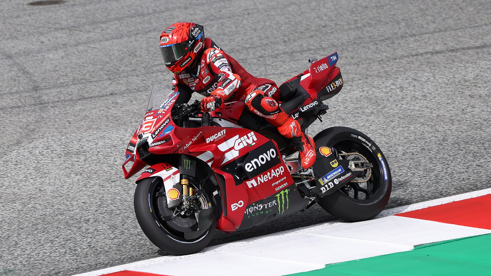

A MotoGP desembarca na Malásia para uma das etapas mais exigentes de seu calendário. O Circuito Internacional de Sepang recebe a 19ª etapa do Campeonato Mundial de Motovelocidade, reunindo velocidade, estratégia, desgaste físico e uma disputa pelo título que chega à reta decisiva com diferenças pequenas na classificação.
Depois da passagem pela Austrália, o campeonato segue para um traçado conhecido pelas longas retas, curvas técnicas e condições climáticas desafiadoras. A etapa anterior ficou marcada por acontecimentos inesperados, incluindo o resultado da Sprint e o cancelamento da corrida principal. Agora, o GP da Malásia representa mais uma oportunidade para os pilotos somarem pontos importantes e disputarem posições na classificação do campeonato.
O principal nome na chegada à Malásia é Marc Márquez, piloto da Ducati Lenovo Team. O espanhol lidera o campeonato com dez pontos de vantagem, cenário que aumenta a importância de cada resultado na Sprint e na corrida principal.
Mais do que uma etapa asiática, o GP representa um teste completo para pilotos e equipes. Em Sepang, potência de motor, equilíbrio da moto, administração dos pneus e resistência física podem fazer a diferença entre a vitória e a perda de posições importantes no Mundial.
Cronograma do Grande Prêmio
O fim de semana acontece entre sexta-feira, 30 de outubro, e domingo, 1º de novembro. Como a Malásia está 11 horas à frente de Brasília, algumas atividades aparecem no calendário brasileiro ainda no dia anterior à realização das sessões locais.
Confira os principais horários da MotoGP, convertidos para o horário de Brasília:
Sexta-feira, 30 de outubro:
- Treino livre 1: quinta-feira, 29 de outubro, às 23h45
- Treino da MotoGP: sexta-feira, às 4h
Sábado, 31 de outubro:
- Treino livre 2: sexta-feira, 30 de outubro, às 23h10
- Início da classificação: sexta-feira, às 23h50
- Corrida Sprint: sábado, às 4h
Domingo, 1º de novembro:
- Warm-up: sábado, 31 de outubro, às 23h40
- Corrida principal da MotoGP: domingo, às 4h
- Distância prevista: 20 voltas
Além da categoria principal, a programação contempla a Moto2 e a Moto3, que também disputam suas corridas no domingo. Em Sepang, a prova da Moto3 está marcada para 1h de Brasília, enquanto a Moto2 tem largada prevista para 2h15. A corrida tem transmissão no Brasil pela ESPN4.
Os horários seguem a programação oficial divulgada para o Grande Prêmio, sujeitos a eventuais alterações durante o evento.
Um dos circuitos mais desafiadores da MotoGP
O Circuito Internacional de Sepang é um dos grandes símbolos da expansão da motovelocidade na Ásia. Localizado aproximadamente 50 quilômetros ao sul de Kuala Lumpur, capital da Malásia, o autódromo recebeu seu primeiro Grande Prêmio do Mundial em 1999.
Projetado pelo arquiteto alemão Hermann Tilke, o traçado combina retas extensas, curvas rápidas e pontos de frenagem bastante exigentes. Essa variedade obriga as equipes a encontrar um acerto equilibrado, capaz de oferecer velocidade máxima sem comprometer a estabilidade e a tração.
Características do traçado:
- Extensão: 5,54 quilômetros
- Número de curvas: 15
- Curvas à direita: 10
- Curvas à esquerda: 5
- Maior reta: 920 metros
- Largura da pista: 16 metros
- Voltas previstas para a MotoGP: 20
- Distância total da corrida: 110,86 quilômetros
A configuração favorece disputas de posição principalmente nas aproximações das curvas mais lentas, onde os pilotos precisam controlar a frenagem depois de atingir velocidades elevadas.
Ao mesmo tempo, os trechos de média e alta velocidade exigem precisão na trajetória e estabilidade da motocicleta. Pequenos erros podem comprometer a saída de curva e deixar o piloto vulnerável nas retas seguintes.
Um dos aspectos mais característicos de Sepang é a combinação entre temperaturas elevadas e alta umidade relativa do ar.
Essas condições tornam a etapa particularmente exigente do ponto de vista físico. Os pilotos precisam controlar motocicletas extremamente potentes durante mudanças rápidas de direção, frenagens intensas e acelerações constantes, tudo isso em um ambiente que dificulta a dissipação de calor pelo organismo.
O desgaste dos pneus também ocupa posição central na preparação das equipes.
As longas curvas e os momentos de aceleração colocam pressão sobre a borracha, enquanto as frenagens exigem estabilidade da dianteira. Encontrar o equilíbrio entre desempenho imediato e conservação dos pneus pode ser decisivo para manter um ritmo competitivo até a bandeirada.
Outro fator importante é a possibilidade de mudanças nas condições da pista. O clima tropical da região pode trazer chuva, alterando completamente as exigências de pilotagem.
Marc Márquez chega à Malásia com vantagem apertada no Mundial
A disputa pelo Campeonato Mundial de MotoGP de 2026 acrescenta um componente especial à passagem por Sepang.
Márquez chega à 19ª etapa na liderança da classificação, com dez pontos de vantagem. A diferença mantém a disputa aberta e transforma o fim de semana malaio em mais uma oportunidade importante na construção do resultado final da temporada.
O sistema de pontuação da MotoGP valoriza tanto a corrida principal quanto a Sprint, realizada aos sábados.
Na corrida principal, o vencedor recebe 25 pontos, enquanto o segundo colocado conquista 20 e o terceiro soma 16. A pontuação alcança os 15 primeiros pilotos classificados.
Já na Sprint, os nove primeiros recebem pontos, com 12 destinados ao vencedor.
Isso significa que um mesmo fim de semana pode distribuir até 37 pontos a um piloto que vença as duas provas.
Com uma vantagem de apenas dez pontos na chegada à Malásia, Márquez precisa considerar não apenas a busca por vitórias, mas também a importância de evitar erros que possam comprometer sua colocação final.
A Sprint ganha relevância nesse contexto porque permite movimentações na classificação antes mesmo da corrida principal.
Como funciona a Sprint da MotoGP
Introduzida no formato regular da competição em 2023, a corrida acrescentou uma nova dimensão estratégica aos fins de semana da categoria.
Disputada no sábado, ela tem uma distância menor do que o Grande Prêmio tradicional e distribui pontos aos nove primeiros colocados.
A classificação realizada anteriormente define o posicionamento de largada tanto da Sprint quanto da corrida principal.
Por ser mais curta, a Sprint costuma incentivar uma abordagem agressiva desde as primeiras voltas. Os pilotos têm menos tempo para recuperar posições, o que aumenta a importância da largada e das primeiras disputas.
Em Sepang, a combinação entre retas longas e zonas de frenagem cria oportunidades de ultrapassagem, mas também exige atenção para evitar incidentes.
A história do GP
O Grande Prêmio da Malásia tem uma trajetória que começou antes da inauguração de Sepang.
A primeira edição aconteceu em 1991, no circuito de Shah Alam. Na ocasião, o norte-americano John Kocinski conquistou a vitória na principal categoria do Mundial, pilotando uma Yamaha.
A chegada do campeonato a Sepang, em 1999, marcou uma transformação importante para a prova.
Na primeira corrida da categoria 500cc no novo autódromo, o vencedor foi Kenny Roberts Jr., com uma Suzuki.
Desde então, Sepang se consolidou como um dos circuitos mais reconhecidos da motovelocidade mundial, recebendo corridas de diferentes gerações de pilotos e motocicletas.
O autódromo também desempenha papel relevante fora das competições. Sua estrutura e suas características técnicas fizeram dele um local tradicional para os testes de pré-temporada da categoria.
Essa combinação entre história, infraestrutura e exigência esportiva ajuda a explicar a importância da etapa malaia para o campeonato.
O que observar durante o GP
A prova de Sepang apresenta diferentes elementos que podem influenciar diretamente o resultado.
O primeiro deles é o desempenho na classificação. Embora o circuito ofereça oportunidades de ultrapassagem, largar entre os primeiros pode reduzir a exposição às disputas mais intensas do pelotão.
Outro ponto é a velocidade nas retas. As motocicletas precisam encontrar um compromisso entre desempenho aerodinâmico, aceleração e estabilidade nas zonas de frenagem.
O terceiro aspecto é o comportamento dos pneus ao longo das 20 voltas. Um piloto competitivo no início pode enfrentar dificuldades na parte final caso não consiga administrar adequadamente o desgaste.
A condição física também merece atenção especial. O calor e a umidade tornam a manutenção da concentração particularmente importante, sobretudo nas voltas finais.
Por último, existe o peso da classificação do campeonato. Pilotos envolvidos na disputa pelas primeiras posições do Mundial precisam equilibrar agressividade e regularidade, considerando o impacto de cada resultado.
Reta final da MotoGP 2026: o que vem depois da Malásia
Depois de Sepang, o calendário oficial prevê mais três Grandes Prêmios:
- GP do Catar: 6 a 8 de novembro, em Lusail
- GP de Portugal: 20 a 22 de novembro, em Portimão
- GP de Valência: 27 a 29 de novembro, no Circuito Ricardo Tormo
Com quatro etapas incluindo a Malásia, o campeonato entra em um período em que cada corrida assume peso para os pilotos que ainda disputam posições importantes.
A liderança de Marc Márquez, combinada com a pequena diferença de pontos na chegada à etapa asiática, coloca Sepang no centro dessa reta final.
A largada de domingo, às 4h de Brasília, será mais do que uma corrida em um dos circuitos mais exigentes da categoria. Será mais uma etapa importante na definição de quem conseguirá transformar velocidade, estratégia e regularidade em resultado na reta final da MotoGP 2026.